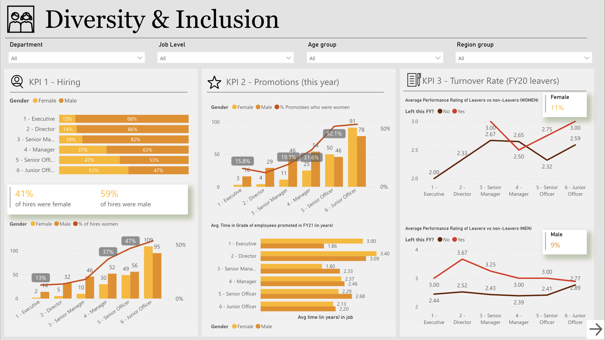
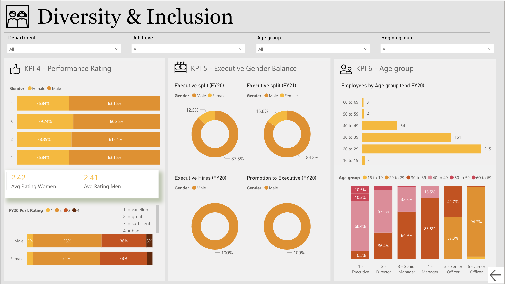

Visualizing Workforce Diversity and Inclusion Metrics with Power BI
A people analytics dashboard that helps HR teams and executive leadership monitor representation, identify equity gaps, and track inclusion-related trends across hiring, promotion, and performance.

Overview
This project is a Power BI dashboard designed to visualize diversity and inclusion data across hiring, promotion, turnover, performance, and leadership representation. The dashboard supports HR teams and executive leadership in monitoring workforce composition, identifying potential inequities, and tracking inclusion-related trends over time.
The design focuses on presenting complex people data in a clear, comparable format — making it possible to spot patterns at a glance rather than through manual analysis. Each section of the dashboard answers a specific organizational question, from "who gets promoted?" to "how does performance evaluation vary by demographic?"
Key Analysis Areas
The dashboard is structured around five distinct analytical themes, each chosen to surface a different dimension of diversity and inclusion within the organization:
-
Hiring & Promotion
Visual breakdowns of gender distribution across job levels and promotion outcomes, highlighting gaps in career progression and representation. Side-by-side comparisons make it easy to see where advancement rates diverge between groups.
-
Turnover & Retention
Comparison of turnover rates and performance ratings by gender and job level to surface potential patterns in employee retention. This view helps identify whether certain groups are leaving at disproportionate rates — and at what stage of tenure.
-
Executive Representation
Gender split analysis at the executive level across multiple fiscal years, providing visibility into leadership diversity trends over time. This longitudinal view makes it possible to assess whether representation is improving, stagnating, or declining at the top of the organization.
-
Performance Ratings
Distribution and average performance ratings broken down by gender, offering insight into internal evaluation patterns. Disparities in rating distributions can signal bias in the review process or systemic differences in access to high-visibility work.
-
Age Group Demographics
Cross-sectional views of employee age groups across roles and levels, supporting inclusion analysis beyond gender alone. Understanding age distribution helps organizations plan for succession, knowledge transfer, and multi-generational workplace design.
Dashboard Views
The dashboard is divided into two main views: a high-level summary page for executives who need quick directional insight, and a detailed breakdown page for HR analysts who need to explore specific segments and time periods.


-
Executive summary view
The top-level page surfaces the most critical KPIs at a glance — headcount by gender and level, promotion rates, and executive representation — using large numbers and minimal chart complexity. Leadership can assess the current state of diversity without drilling into details.
-
Analyst detail view
The detailed page provides filterable breakdowns by department, fiscal year, job level, and demographic segment. Interactive slicers allow HR analysts to isolate specific cohorts and compare trends across time periods — turning raw workforce data into targeted, actionable insight.
Reflection
This project deepened my understanding of how data visualization can serve different audiences simultaneously. The same underlying dataset needs to tell different stories depending on whether the viewer is making a strategic decision or conducting a detailed audit.
Designing for two audiences
Building separate views for executives and analysts required thinking carefully about what each audience needs first — and what detail they can absorb given their available time and context.
Sensitive data requires careful framing
Diversity data is inherently sensitive. Chart choices, labeling, and visual emphasis all carry implicit weight — showing a gender gap as a dramatic divergence vs. a subtle difference communicates very different urgency to the reader.
Structure before visualization
Before building any chart, defining the five analytical themes — and the specific question each was meant to answer — made every subsequent visualization decision easier and more intentional.
Other Projects

Customer Risk Analysis
Analyzing churn patterns and risk factors with Power BI.

Performance Analytics
Visualizing call center metrics through Power BI.